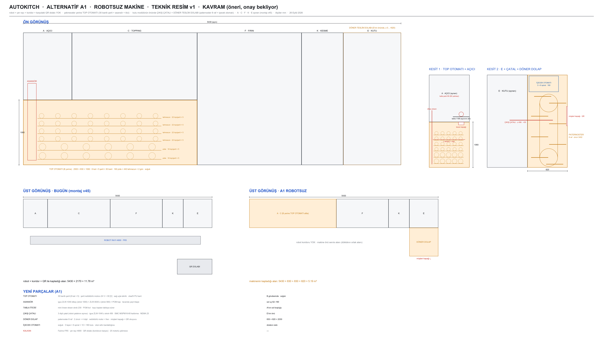

Sen olsan ne yapardın? Robotu kaldırırdım. Bugünkü makinede tek Fairino FR5, 4,9 m'lik yer rayında üç iş yapıyor: çekmeceden hamur topunu açıcıya, kutuyu kutu modülünden QR dolabına, içeceği dolaba taşıyor. Simülasyonda hattın darboğazı bu robot (saatte 41–55 ürün). Robotun yerine her biri 1–2 eksenli, katalog parçalı üç basit makine koyardım. Açıcı, TOPPING, fırın, kesme ve kutu modülü aynen kalıyor. Geçerli makine hâlâ montaj v45; bu sayfa senin onayını bekleyen bir öneri.
| Konu | Bugün (montaj v45) | A1 robotsuz |
|---|---|---|
| Kapladığı alan | 5430 × 2170 = 11,8 m² (hat + robot koridoru 800 + QR dolabı) | 5430 × 830 + 830 × 820 = 5,2 m² (−6,6 m²) |
| Darboğaz · saatte ürün | robot · 41–55 (simde ölçüldü) | fırın · ≈ 60 (4 ürün × 4 dk, pişme süresi VARSAYIM) · TOPPING pizzada 72, lahmacunda 120 |
| Hamur topu | motorlu çekmece açılır, robot alır, açıcının ağzından bırakır | şerit ilerler, top kaba düşer, asansör + itici tablaya koyar |
| Kutu → müşteri | robot çatalla alır, koridoru geçip QR gözüne koyar | çıkış çatalı dolabın rafına koyar, raf müşteri kapağına döner |
| İçecek | soğuk çekmeceden robot alır | dolabın üstündeki soğuk içecek otomatı rafa bırakır |
| Hassas eksen | robot 6 eksen + ray 1 | asansör 2 + itici 1 + çatal 1 + dolap 1 (step / redüktörlü motor) |
| Basit motor | 25 çekmece motoru | 30 şerit motoru + 18 spiral motoru |
| Güvenlik | dükkânda kobot + robot bölgesi, risk analizi ağır | makine kapalı gövde; hareketli parçalar içeride |
| Teslim gözü | 12 göz (QR dolabı) | 8 raf (yoğun saatte az olabilir; 10 raf için hesap gerek) |
| Maliyet kalemi | Kalkanlar, hat sayfasındaki eski bantlara göre: kobot kol 600 bin – 1,8 mln TL · ray 150–300 bin TL · teslim dolabı 60–400 bin TL. Gelenler katalog eksenleri, şerit motorları, paternoster ve vending modülü. Teklif yok, rakam yazmıyorum. | |
| Risk | Not |
|---|---|
| Hamur topu bantta 2 gün | Yapışma ve yassılaşma. Bölmeli (cleat'li) PU bant, un ya da yağ. Pilotta 48 saat denenecek. |
| Şerit ucundan kaba düşüş | Top ≤ 30 mm düşüyor. Şekli bozulur mu, açıcı toparlar mı? Pilotta denenecek. |
| Tavan kapağından soğuk kaçağı | Yaylı klape + ısıtmalı çerçeve (yoğuşma). Kapak yalnız asansör geçerken açık (≈ 2 s). |
| Açıcı kafası | Top 80 mm yüksek, kafa 60 mm kalkınca koninin altında 68 mm boşluk kalıyor. Kafa 90'a kalkmalı. Bugünkü hatta da aynı sorun var (ana animasyonda bulundu). |
| Operatör dolumu | 600 top, 30 şerit, iki günde bir. Tahmin 20–30 dk (VARSAYIM). |
| Teslim gözü 8 | Bugün 12 göz. Paternosterde raf aralığını 330 mm'ye indirirsek 10 raf sığar mı, hesaplanacak. |

Model: arastirma/_uretec/alt_robotsuz_cad_v1.py (yeni parçalar) + alt_montaj_v1.py (hat_v45'ten türetilir) → otonom/hat3d/alt1_v1.glb · resim: teknik_alt_robotsuz_v1.py · 26 Eyl 2026. Geçerli makine ve paftası (v45 / v12) değişmedi.